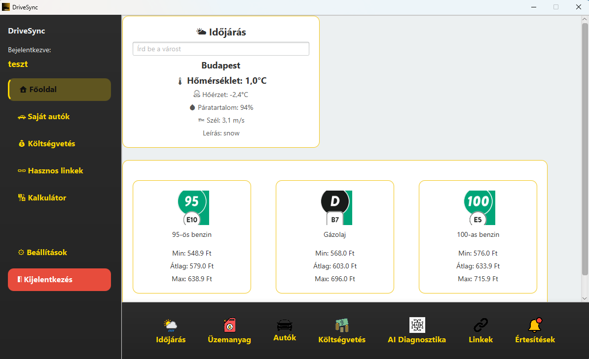
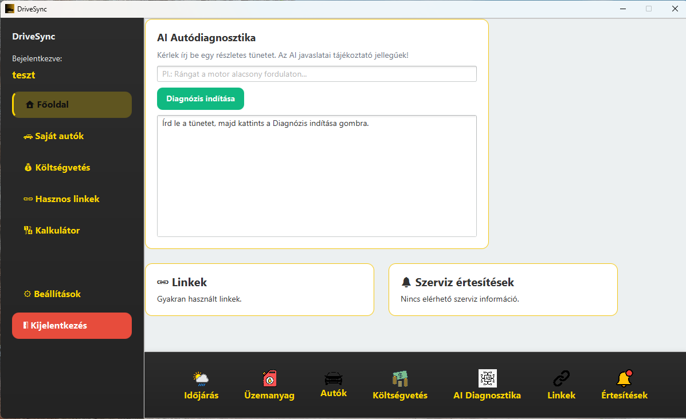

Intuitív Vezérlőpult
Modern oldalsáv a gyors navigációért. Minden modul (autók, költségek, beállítások) egyetlen kattintással elérhető.
Valós Idejű Időjárás
Integrált meteorológiai modul. Tudd meg azonnal, milyen útviszonyokra számíts indulás előtt a tartózkodási helyeden.
Élő Üzemanyagárak
Automatikus adatlekérés a hazai átlagárakról minden indításkor. Tervezz tudatosan a legfrissebb piaci adatokkal.

AI Diagnosztika
Mesterséges intelligenciával támogatott hibaelemzés. Írd le a tüneteket, és az AI azonnal javaslatot tesz a lehetséges problémára.
Hasznos Források
Kurált linkgyűjtemény a legfontosabb autós portálokhoz, alkatrész-keresőkhöz és hivatalos ügyintézési felületekhez.
Okos Értesítések
Soha ne felejtsd el a határidőket. A rendszer automatikusan figyelmeztet a közelgő műszaki vizsgára vagy olajcserére.